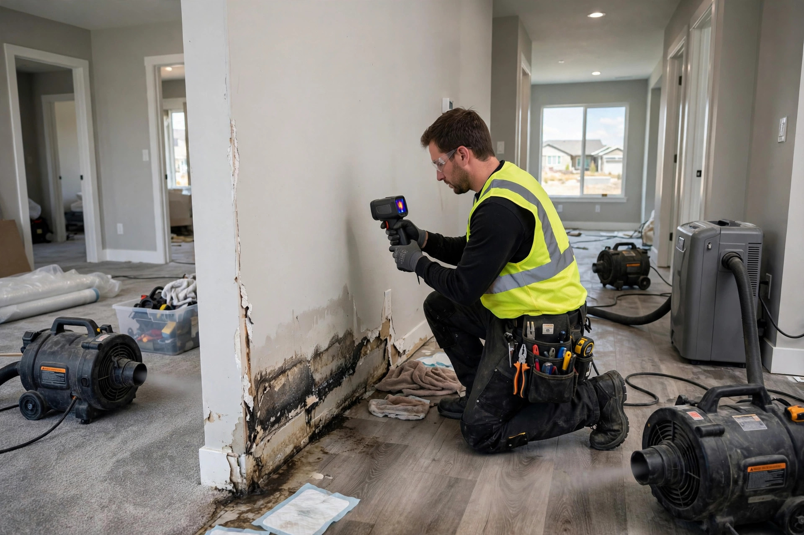

Home / Water Damage / Restoration
Kuna, Idaho · Full-service restorationWater damage restoration that puts the room back together
Extraction gets the water out. Restoration is everything after that: drying the structure, removing what can't be saved, treating for mold, and rebuilding so the room looks like the leak never happened.
What restoration actually involves
Six phases, in order. Each sets up the next; skipping ahead is how jobs drag on for months.
Stop the water, extract it
First the source gets shut off, then pumps and extractors pull the standing water. Every hour it sits pushes moisture deeper into subfloor and wall cavities, so this phase starts the clock.
Map the moisture
Meters and thermal imaging show how far water traveled beyond what's visible. A dry-looking wall can hold soaked insulation behind it. The map decides what gets dried in place and what has to come out, with no tearing out of extra rooms "just in case."
Dry the structure
Commercial dehumidifiers and air movers run for days, pulling moisture out of framing, subfloor, and wall cavities. Readings are taken daily until wood and drywall hit dry standard. Rushing this step traps moisture that feeds mold later.
Remove what can't be saved
Swollen MDF baseboards, delaminated laminate, saturated insulation, and drywall that stayed wet too long come out. What comes off is cut cleanly along straight lines so the rebuild looks intentional, not patched.
Treat for mold
Exposed framing and cavities get antimicrobial treatment before anything is closed up. If growth already started during the wet period, it's remediated under containment first. The EPA's mold guidance stresses drying within 24 to 48 hours as the critical window; treatment covers the gap when that window was missed.
Rebuild and finish
Drywall goes back up, texture is matched, paint, trim, and flooring go down. The goal is simple: when we're done, you shouldn't be able to tell which wall was opened. Fixtures and finishes are matched to what was there, not downgraded.
Why Kuna homes end up needing restoration
Kuna's growth spurt means most water damage here has a local fingerprint, new construction quirks, desert irrigation, and fast-build materials.
Construction-phase fittings
Subdivisions like Crimson Point and Falcon Crest went up fast. Supply-line connections and dishwasher hookups installed on tight schedules are the fittings most likely to let go in the first few years, often inside a wall where nobody sees the drip.
Pressurized irrigation overspray
Kuna runs on pressurized irrigation, and misaligned heads soak siding and foundations all summer. Water wicking up through slab edges and lower stucco shows up as bubbling paint and soft baseboards by August.
Builder-grade everything
Fast-build homes use MDF trim, laminate flooring, and minimum-thickness drywall, materials that swell and delaminate after one good soaking instead of surviving it. Restoration here usually means replacing, not drying, the finishes.
Exposed lines in garages
Water heaters and softeners sitting in uninsulated Kuna garages are freeze targets every January. A split line at 6 a.m. can run for hours before anyone notices, and that's a full-room restoration by afternoon.
A Falcon Crest laundry room wall
Imagine a two-story in Falcon Crest where the upstairs laundry sits over the family room. The homeowner notices a soft spot in the ceiling downstairs and a faint musty smell near the washer. The culprit is a washing-machine drain hose that worked loose, misting the wall cavity for weeks. Restoration starts with extraction, then moisture mapping shows the ceiling drywall and two wall sections are saturated. The wet drywall comes out, the framing dries for four days, cavities get antimicrobial treatment, and then new drywall, texture, and paint go up. The drain hose gets a proper clamp this time. Health context: CDC, Mold.
Restoration questions
How is full restoration different from just water extraction?
Extraction removes standing water, that is step one of maybe six. Restoration continues with moisture mapping, structural drying, removal of unsalvageable material, mold prevention, and rebuild. Extraction alone leaves wet drywall and framing that can grow mold within days.
How long does water damage restoration take in a typical Kuna home?
Drying alone usually takes three to five days with equipment running around the clock. A full restoration including demolition, treatment, and rebuild commonly runs one to three weeks depending on how many rooms were affected and whether custom materials need ordering.
Will my homeowners insurance cover water damage restoration?
Sudden and accidental events like burst pipes or appliance failures are typically covered, while gradual leaks and maintenance issues usually are not. We document moisture readings and damage with photos so your adjuster has a complete record.
Do we have to move out while the restoration happens?
Usually not. Drying equipment is loud but the affected area can be sectioned off. If demolition involves multiple rooms or the only bathroom, we will tell you honestly when temporary relocation makes more sense.
How do you make sure mold does not grow after the drying?
We verify with moisture meters that framing and drywall are back to dry standard before rebuild, treat at-risk surfaces with antimicrobial, and confirm there is no trapped moisture behind walls. The EPA notes that drying within 24 to 48 hours is the key window for preventing mold growth.
Other water damage help in Kuna
Emergency Water Extraction
Standing water pulled out fast, before it spreads deeper.
Learn more → WaterFlooded Basement Cleanup
Pump-out, drying and salvage when a basement takes on water.
Learn more → WaterCeiling Water Damage Repair
Stains, sagging and drips from roof leaks or upstairs plumbing.
Learn more → WaterWater Damaged Drywall Repair
Flood cuts, drying and rebuild after a leak or flood.
Learn more →Get the room back to normal
One call starts the whole sequence, extraction, drying, treatment, rebuild. Describe what happened and we'll lay out what your situation actually needs, plainly.